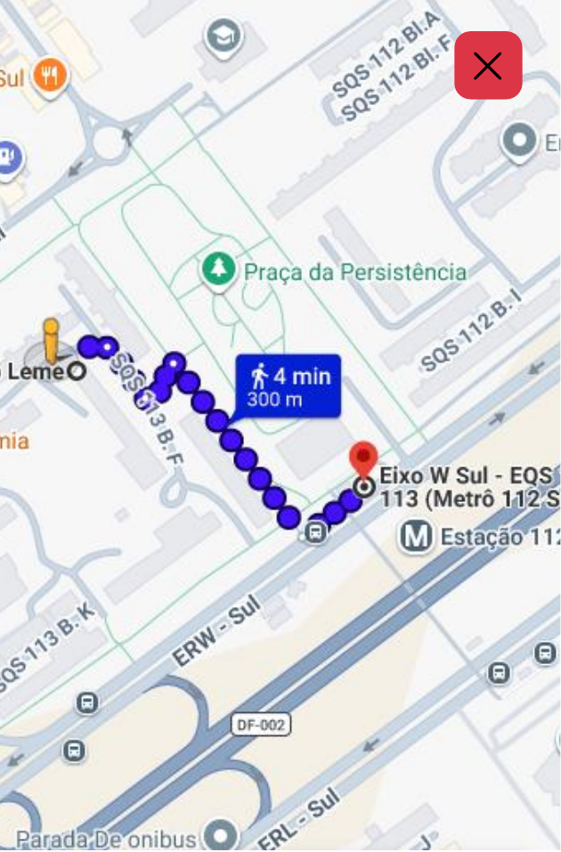
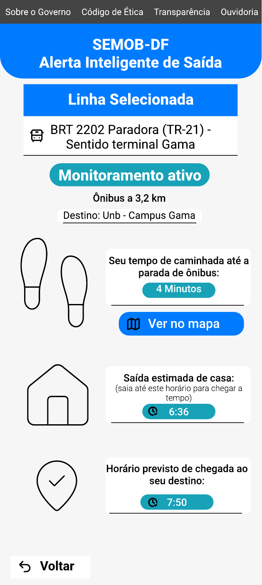
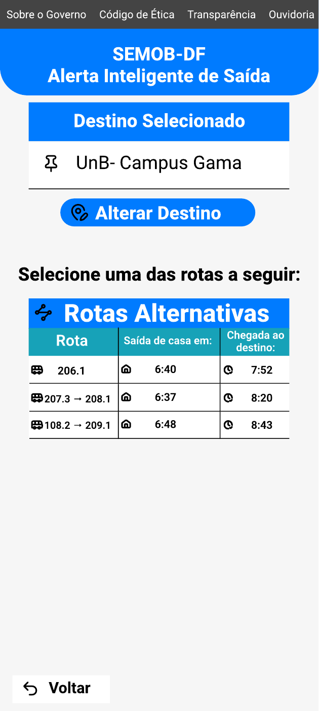
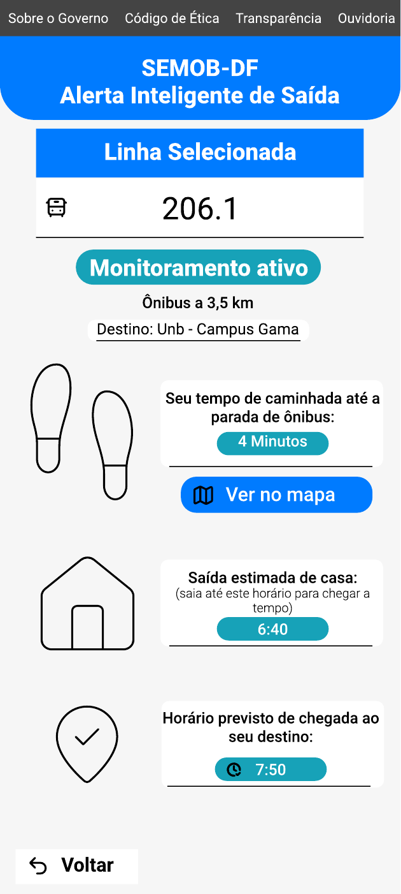
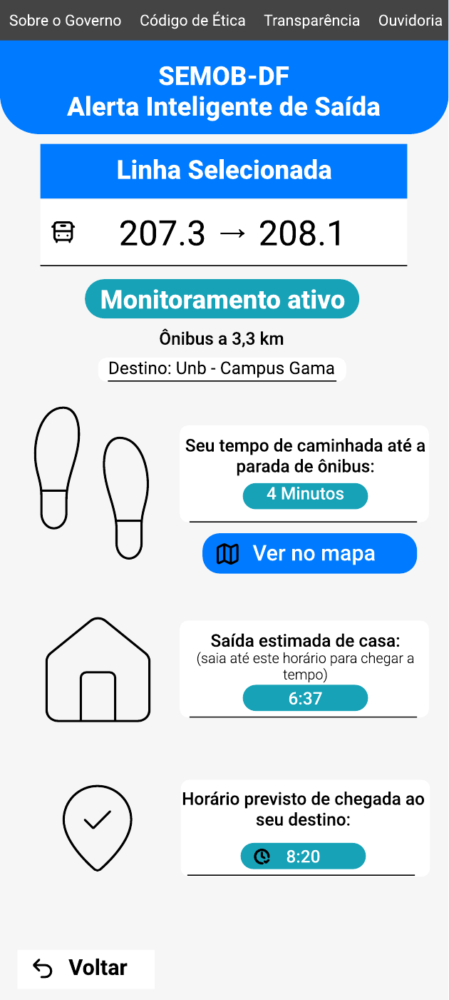
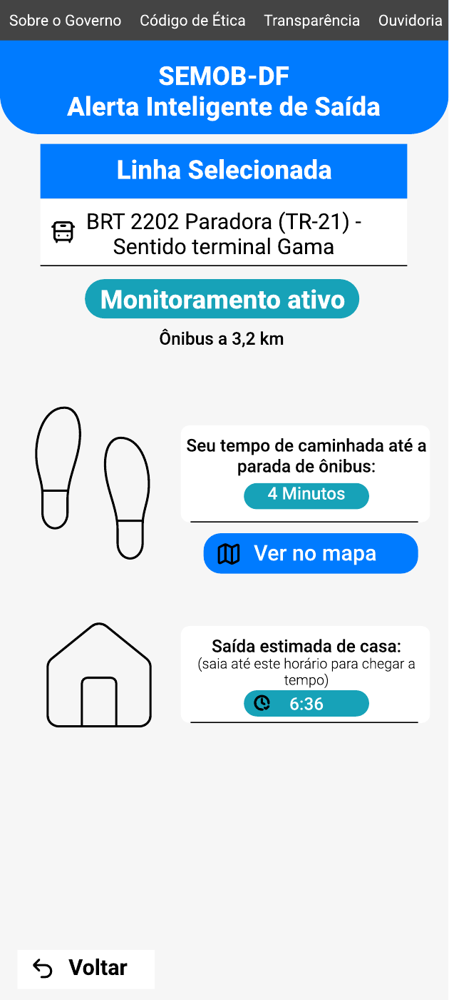
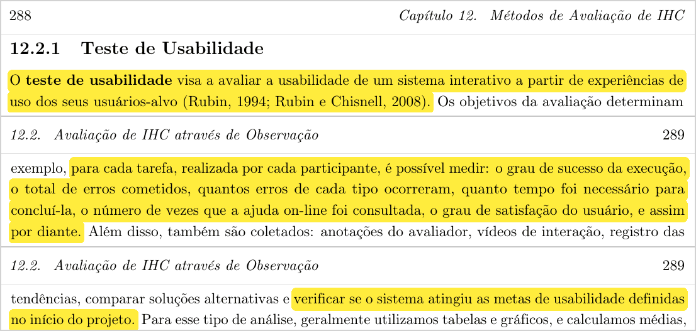
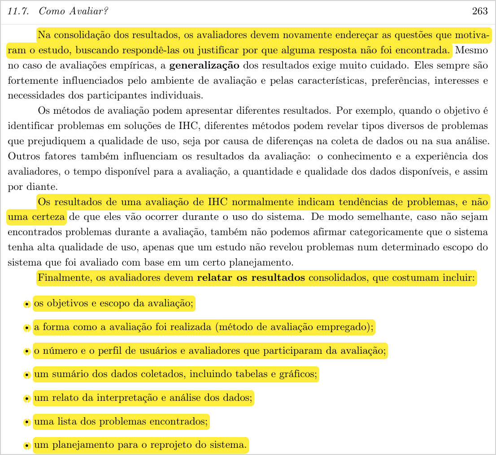

Histórico de Versão e Contribuição¶
| Data | Versão | Descrição | Autor(es) | Revisor(es) | Declaração de Uso de IA |
|---|---|---|---|---|---|
| 12/11/2026 | 1.0 |
Consolidação e relato dos resultados da avaliação de usabilidade do Protótipo de Alta Fidelidade (TAR-01) com 3 participantes. | Igor Dantas Araújo | Gabriel Cardone | Google Gemini - Utilizada para apoio na estruturação das tabelas em Markdown e transcrição/revisão sintática dos dados empíricos. |
Relato dos Resultados da Avaliação do Protótipo de Alta Fidelidade (TAR-01)¶
Neste documento, apresenta-se o Relato dos Resultados da Avaliação do Protótipo de Alta Fidelidade referente à TAR-01 (Alerta Inteligente de Saída de Casa) da SEMOB-DF / BRB Mobilidade. O relatório consolida as evidências empíricas coletadas a partir dos testes de usabilidade e entrevistas pós-teste conduzidos com três participantes no protótipo interativo desenvolvido no Figma.
A condução e a interpretação dos resultados fundamentam-se nas diretrizes metodológicas de Interação Humano-Computador (Barbosa et al., 2021, Cap. 11 e 12).
Artefatos relacionados — fluxo da funcionalidade TAR-01 (Alerta Inteligente de Saída de Casa):
- Persona: João Pedro Carvalho
- Cenário: Cenário 2
- Análise de tarefas: TAR-01
- Storyboard: Storyboard 01
- Nível 1: avaliação do storyboard e da análise de tarefas: Planejamento da avaliação · Planejamento do relato · Relato dos resultados
- Nível 2: protótipo de papel (baixa fidelidade): Planejamento da avaliação · Planejamento do relato · Relato dos resultados
- Nível 3: protótipo de alta fidelidade: Planejamento da avaliação · Planejamento do relato · Relato dos resultados (esta página)
- Telas do protótipo de papel: telas no planejamento da avaliação
- Protótipo de alta fidelidade navegável: acessar o protótipo
1. O Protótipo Avaliado¶
O objeto desta avaliação é o protótipo interativo de alta fidelidade da TAR-01 (Alerta Inteligente de Saída de Casa), desenvolvido no Figma em formato mobile-first e em conformidade com o Guia de Estilo do Grupo 05. O protótipo pode ser acessado tanto em sua versão interativa quanto em sua versão estática (PDF com todas as telas):
- Protótipo Interativo no Figma: Acessar o protótipo no Figma
- Telas do Protótipo (PDF): Visualizar PDF das telas do protótipo
As Figuras 1 a 9 mostram as telas do protótipo de alta fidelidade da TAR-01.
Figura 1: Alerta de saída imediata, com as opções "Estou saindo!" e "Buscar rota alternativa" (página 1 do PDF das telas)
Fonte: Elaborado por Igor Dantas Araújo (2026). Telas extraídas do [PDF das telas do protótipo](../../../../assets/PDFs/Igor_telas_prototipo_alta_fidel.pdf).
Figura 2: Mapa do trajeto a pé até a parada (página 2 do PDF das telas)

Fonte: Elaborado por Igor Dantas Araújo (2026). Telas extraídas do [PDF das telas do protótipo](../../../../assets/PDFs/Igor_telas_prototipo_alta_fidel.pdf).
Figura 3: Tela inicial com origem, destino, destinos favoritos e linhas favoritas (página 3 do PDF das telas)
Fonte: Elaborado por Igor Dantas Araújo (2026). Telas extraídas do [PDF das telas do protótipo](../../../../assets/PDFs/Igor_telas_prototipo_alta_fidel.pdf).
Figura 4: Monitoramento ativo da linha BRT 2202 (TR-21) (página 4 do PDF das telas)

Fonte: Elaborado por Igor Dantas Araújo (2026). Telas extraídas do [PDF das telas do protótipo](../../../../assets/PDFs/Igor_telas_prototipo_alta_fidel.pdf).
Figura 5: Rotas alternativas para o destino UnB – Campus Gama (página 5 do PDF das telas)

Fonte: Elaborado por Igor Dantas Araújo (2026). Telas extraídas do [PDF das telas do protótipo](../../../../assets/PDFs/Igor_telas_prototipo_alta_fidel.pdf).
Figura 6: Monitoramento ativo da rota 206.1 (página 6 do PDF das telas)

Fonte: Elaborado por Igor Dantas Araújo (2026). Telas extraídas do [PDF das telas do protótipo](../../../../assets/PDFs/Igor_telas_prototipo_alta_fidel.pdf).
Figura 7: Monitoramento ativo da rota 207.3 → 208.1 (página 7 do PDF das telas)

Fonte: Elaborado por Igor Dantas Araújo (2026). Telas extraídas do [PDF das telas do protótipo](../../../../assets/PDFs/Igor_telas_prototipo_alta_fidel.pdf).
Figura 8: Monitoramento ativo da rota 108.2 → 209.1 (página 8 do PDF das telas)
Fonte: Elaborado por Igor Dantas Araújo (2026). Telas extraídas do [PDF das telas do protótipo](../../../../assets/PDFs/Igor_telas_prototipo_alta_fidel.pdf).
Figura 9: Monitoramento ativo da linha BRT 2202 (TR-21) (página 9 do PDF das telas)

Fonte: Elaborado por Igor Dantas Araújo (2026). Telas extraídas do [PDF das telas do protótipo](../../../../assets/PDFs/Igor_telas_prototipo_alta_fidel.pdf).
2. Introdução e Objetivos da Avaliação¶
2.1 Escopo Avaliado¶
A avaliação concentrou-se no fluxo completo da TAR-01, que permite ao usuário do transporte público do Distrito Federal ser avisado proativamente sobre o momento ideal de sair de casa para não perder o ônibus. O escopo avaliado no protótipo do Figma abrangeu:
- A seleção da linha/destino habitual e a consulta às estimativas de chegada;
- A visualização do tempo de caminhada até o ponto calculado automaticamente via GPS e a ativação do alerta;
- O recebimento e a interpretação do alerta emergencial de saída imediata;
- O acionamento da contingência, com a visualização de rotas alternativas e a abertura do mapa.
Os participantes recrutados estão alinhados ao perfil da persona João Pedro Carvalho, estudante usuário frequente do transporte público coletivo do DF.
2.2 Objetivos da Avaliação¶
Conforme definido na etapa D — Determinar os Objetivos do Planejamento da Avaliação do Protótipo de Alta Fidelidade, a avaliação teve como objetivos:
- Verificar a conformidade com o Guia de Estilo do Grupo 05: paleta de cores, tipografia, alvos de toque mobile-first, botões no padrão
[Verbo + Ação]e hierarquia de cards. - Avaliar a usabilidade da funcionalidade TAR-01: identificar gargalos, erros de navegação ou dúvidas na busca da linha, na ativação do monitoramento e no recebimento da notificação de saída.
- Validar a eficácia da automação de caminhada via GPS: verificar se o cálculo automático, sem digitação, reduz o esforço cognitivo do usuário.
- Avaliar a comunicabilidade e o feedback do sistema: verificar se transições, microinterações e mensagens de exceção (como a sugestão de rota alternativa em 1 toque) fornecem respostas claras e imediatas.
- Subsidiar o produto final: coletar dados quantitativos e qualitativos para os ajustes finais de layout e comportamento no Figma.
2.3 Perguntas da Avaliação (Framework DECIDE)¶
Na etapa E — Explorar as Perguntas do Framework DECIDE (Barbosa et al., 2021), foram definidas as perguntas investigativas que orientaram a observação e a entrevista pós-teste, cujas respostas são consolidadas na Seção 5.2:
Quadro 1: Perguntas Investigativas da Avaliação
| ID | Foco | Pergunta Investigativa |
|---|---|---|
| Q01 | Conformidade com o Guia de Estilo | Os componentes são legíveis, com alvos de toque adequados e rótulos expressivos (verbo + ação)? |
| Q02 | Busca e Entrada de Dados | A busca/seleção de linha e destino é fluida e intuitiva? |
| Q03 | Cálculo Automático via GPS | O tempo de caminhada automático é compreendido como informação fornecida pelo sistema? |
| Q04 | Feedback e Notificação Proativa | O participante reconhece a urgência do alerta de saída e aciona a ação primária? |
| Q05 | Tratamento de Exceção (Contingência) | O participante localiza e aciona a sugestão de rota alternativa em 1 toque? |
| Q06 | Satisfação e Estética | Como o participante avalia o visual e a facilidade de uso em comparação com outros apps de mobilidade? |
Fonte: Elaborado por Igor Dantas Araújo (2026).
3. Gravações das Entrevistas e Termos de Consentimento¶
Em conformidade com os princípios éticos em pesquisas envolvendo seres humanos (Resoluções CNS nº 466/2012 e nº 510/2016; Barbosa et al., 2021, Seção 7.4), todos os participantes foram devidamente esclarecidos e assinaram o Termo de Consentimento Livre e Esclarecido (TCLE) antes do início dos testes.
Abaixo estão reservadas as seções para acesso aos registros em vídeo (gravação da interação na tela do Figma e filmagem do rosto do participante) e ao termo de consentimento individual assinado:
3.1 Entrevistado 1¶
- Gravação da Tela (Interação no Figma): Link para o YouTube - Gravação de Tela
- Gravação do Rosto do Participante: Link para o YouTube - Câmera do Rosto
- Termo de Consentimento Livre e Esclarecido (TCLE): Visualizar PDF do TCLE Assinado
3.2 Entrevistado 2¶
- Gravação da Tela (Interação no Figma): Link para o YouTube - Gravação de Tela
- Gravação do Rosto do Participante: Link para o YouTube - Câmera do Rosto
- Termo de Consentimento Livre e Esclarecido (TCLE): Visualizar PDF do TCLE Assinado
3.3 Entrevistado 3¶
- Gravação da Tela (Interação no Figma): Link para o YouTube - Gravação de Tela
- Gravação do Rosto do Participante: Link para o YouTube - Câmera do Rosto
- Termo de Consentimento Livre e Esclarecido (TCLE): Visualizar PDF do TCLE Assinado
4. Metodologia e Caracterização dos Participantes¶
A avaliação adotou o método de Teste de Usabilidade (Observação de Uso em Ambiente Controlado) apoiado pela técnica de Pensar em Voz Alta (Think Aloud) e finalizado com uma entrevista semiestruturada pós-teste.
A amostragem foi dimensionada em três participantes, conforme o planejamento da avaliação, com base nas orientações de Barbosa et al. (2021, pp. 258–259) sobre o perfil e o número de participantes e na referência de Nielsen (2000 apud BARBOSA et al., 2021), segundo a qual poucos usuários bastam para encontrar a maioria dos problemas na interface.
Tabela 1: Caracterização Demográfica e Perfil dos Participantes Recrutados
| Participante | Perfil Demográfico / Ocupação | Frequência de Uso de Transporte no DF | Familiaridade com Apps de Mobilidade (Moovit / Maps) | Data da Sessão |
|---|---|---|---|---|
| Entrevistado 1 | Estudante universitário (UnB Gama) | Usuário Frequente de Ônibus / BRT | Média / Alta (Usa Moovit e rotas de ônibus) | 12/11/2026 |
| Entrevistado 2 | Estudante universitário (UnB Gama) | Usuário Frequente de Transporte Público | Alta (Usa rotineiramente apps de mobilidade) | 12/11/2026 |
| Entrevistado 3 | Estudante universitário (UnB Gama) | Usuário Frequente de Ônibus / BRT | Alta (Acostumado a definir origem/destino no Moovit) | 12/11/2026 |
Fonte: Elaborado por Igor Dantas Araújo (2026).
5. Sumário dos Dados Coletados¶
5.1 Desempenho Quantitativo nas Tarefas Interativas¶
Todos os três participantes conseguiram interagir com o protótipo de alta fidelidade de maneira fluida, explorando os cards de rotas, compreendendo a distância/quilometragem, acionando o mapa e navegando pelas rotas alternativas sem desistências ou bloqueios.
Tabela 2: Desempenho Quantitativo nas Tarefas da TAR-01 no Figma
| ID Tarefa | Descrição da Tarefa no Figma | Sucesso sem Ajuda (P1, P2, P3) | Taxa de Conclusão | Erros Críticos Observados | Avaliação Geral |
|---|---|---|---|---|---|
| TAR-01.1 | Selecionar a linha/destino habitual (UnB Gama) e consultar estimativas. | Sim, Sim, Sim | 100% | 0 | Excelente |
| TAR-01.2 | Visualizar o cálculo de caminhada via GPS e acionar o alerta. | Sim, Sim, Sim | 100% | 0 | Excelente |
| TAR-01.3 | Receber e interpretar o alerta emergencial de saída imediata. | Sim, Sim, Sim | 100% | 0 | Excelente |
| TAR-01.4 | Acionar contingência, visualizar opções de rota alternativa e abrir o mapa. | Sim, Sim, Sim | 100% | 0 | Excelente |
Fonte: Elaborado por Igor Dantas Araújo (2026).
5.2 Consolidação Qualitativa das Respostas da Entrevista Pós-Teste (DECIDE)¶
Tabela 3: Síntese das Respostas da Entrevista Pós-Teste por Participante
| ID | Pergunta Investigativa | Entrevistado 1 | Entrevistado 2 | Entrevistado 3 | Conclusão da Avaliação |
|---|---|---|---|---|---|
| Q01 | Os botões, ícones e rótulos foram fáceis de enxergar e clicar? | Tranquilos e intuitivos; notou apenas o susto visual com o alerta repentino. | Acessíveis e utilizáveis; textos com formatação legal. | Fácil de ler, excelente contraste de cores, sem conflito visual. | Conforme com o Guia de Estilo |
| Q02 | A busca/seleção de linha e destino foi intuitiva? | Muito claro; visualizou com facilidade as linhas para o destino desejado. | Intuitivo; fluxo bem compreensível tanto por rota quanto por destino. | Muito intuitivo; familiar por usar apps como o Moovit. | Conforme / Validado |
| Q03 | Como avalia o cálculo automático de caminhada via GPS pelo sistema? | Considerou uma excelente adição para a versão mobile que o Moovit não cobre. | Avaliou como muito melhor e mais ágil do que ter que inserir manualmente. | Uma "mão na roda", mas sugeriu manter opção manual como contingência. | Alta Aceitação e Eficiência |
| Q04 | O alerta de saída imediata deixou clara a urgência do adiantamento? | Entendeu de imediato; chamativo e com senso de urgência evidente. | Entendeu prontamente as opções de adiantar a saída ou buscar rota. | Compreendeu na hora a mensagem e o motivo do adiantamento. | Feedback Eficaz |
| Q05 | A opção de sugerir rota alternativa em 1 toque foi compreendida? | Compreendeu com certeza a proposta e a utilidade da alternativa. | Sim; entendeu como um plano de ação para evitar a perda da viagem. | Entendeu prontamente como alternativa para chegar a tempo. | Excelente Comunicabilidade |
| Q06 | Como avalia o visual geral em comparação com outros apps (Maps, Moovit)? | Intuitivo e satisfatório em comparação com outros sistemas. | Interface simples, limpa, sem exageros e com cores em destaque. | Nota 10/10 para as cores e disposição dos elementos na tela. | Alta Satisfação Subjetiva |
Fonte: Elaborado por Igor Dantas Araújo (2026).
6. Tabela de Registro e Priorização de Problemas de IHC¶
A análise das interações e dos comentários espontâneos dos entrevistados permitiu identificar dois pontos de refinamento de interface, classificados segundo a escala de severidade de problemas de Nielsen (1994 apud BARBOSA et al., 2021) e Barbosa et al. (2021):
Tabela 4: Registro, Classificação e Priorização de Problemas de Usabilidade
| ID Problema | Descrição do Problema Observado | Tela / Componente Afetado | Severidade (0 a 4) | Princípio de IHC Prejudicado | Sugestão de Reprojeto no Figma |
|---|---|---|---|---|---|
| PROB-F01 | O participante mencionou que alguns cards/botões apresentavam cantos muito retos ("quadradões"), sugerindo maior arredondamento para harmonizar o layout. | Tela de Rotas Alternativas e Botões Secundários | 1 (Leve) | Estética e Design Minimalista / Padrão de Interface | Aumentar o corner radius dos cards e botões no Figma (ex.: de 4px/8px para 12px/16px) conforme o Guia de Estilo. |
| PROB-F02 | O participante relatou ter levado um "susto" com a entrada brusca do alerta emergencial na tela, por ser algo inesperado. | Overlay de Alerta de Saída Imediata | 1 (Leve) | Prevenção e Tratamento de Rupturas de Interação | Suavizar a transição do pop-up no Figma com efeito Fade/Dissolve ou animação de deslizamento (Slide In). |
Fonte: Elaborado por Igor Dantas Araújo (2026) com base no feedback empírico.
7. Avaliação de Conformidade com o Guia de Estilo do Grupo 05¶
Tabela 5: Conformidade das Telas do Figma com o Guia de Estilo
| Diretriz do Guia de Estilo | Padrão Especificado | Evidência nos Testes com os 3 Participantes | Situação |
|---|---|---|---|
| Contraste e Legibilidade | Textos legíveis e cores acessíveis sem conflito de saturação. | Todos elogiaram o contraste; P3 avaliou as cores como "10/10". | Conforme |
| Rótulos de Ação | Padrão claro [Verbo + Ação] em botões mobile amplos. |
Participantes acionaram as opções sem hesitação. | Conforme |
| Automação de Caminhada | Cálculo automático via GPS para reduzir a carga cognitiva. | Fortemente elogiado por todos como uma adição prática e ágil. | Conforme |
| Visibilidade de Estado | Alertas urgentes com hierarquia e clareza de opções. | As ações "Sair Agora" e "Rota Alternativa" foram compreendidas prontamente. | Conforme |
Fonte: Elaborado por Igor Dantas Araújo (2026).
8. Plano de Reprojeto e Ciclo de Iteração no Figma¶
Com base nos resultados, o protótipo de alta fidelidade da TAR-01 foi aprovado com louvor pelos três participantes, necessitando apenas de refinamentos cosméticos rápidos:
- Arredondamento de Componentes (PROB-F01): Uniformizar as bordas de todos os cards de listagem de linhas e botões com raio de 12px a 16px no Figma para eliminar o aspecto rígido apontado pelo Entrevistado 3.
- Suavização do Alerta (PROB-F02): Configurar a transição do pop-up de adiantamento no Figma como Smart Animate / Ease Out, evitando o impacto visual abrupto que causou surpresa inicial no Entrevistado 1.
- Opção de Ajuste Manual de Tempo: Considerar a inclusão de um botão discreto de edição de minutos junto ao card de GPS para atender a usuários que desejem calibrar sua velocidade média de caminhada, conforme sugerido pelo Entrevistado 3.
9. Conclusão¶
A avaliação do protótipo de alta fidelidade da TAR-01 confirmou a viabilidade da funcionalidade: os três participantes concluíram todas as sub-tarefas sem ajuda (taxa de conclusão de 100%) e sem erros críticos. Em relação aos objetivos da avaliação, a interface mostrou-se conforme ao Guia de Estilo do Grupo 05, o cálculo automático da caminhada via GPS teve alta aceitação e o alerta de saída e a rota alternativa foram compreendidos de imediato.
Os dois problemas encontrados (PROB-F01 e PROB-F02) têm severidade leve e são de natureza estética e de transição, sem impedir o uso. Como lição aprendida, destaca-se a importância de equilibrar a urgência do alerta com uma entrada visual mais suave, além de considerar uma opção de ajuste manual do tempo de caminhada como contingência ao GPS. Com os refinamentos da Seção 8, o protótipo está validado para a versão final da TAR-01.
10. Fotos de Referência¶
As Figuras 10 a 12 mostram os trechos que fundamentam este artefato, recortados e grifados em amarelo diretamente do livro da disciplina (BARBOSA et al., 2021).
Figura 10: Representação de interface em alta fidelidade

Fonte: BARBOSA et al. (2021, p. 210).
Figura 11: 12.2.1 Teste de usabilidade: objetivo, atividades e medidas por tarefa

Fonte: BARBOSA et al. (2021, pp. 288–289).
Figura 12: 11.7.5 Consolidação e relato dos resultados

Fonte: BARBOSA et al. (2021, p. 263).
11. Referências Bibliográficas¶
- BARBOSA, Simone Diniz Junqueira; SILVA, Bruno Santana da; SILVEIRA, Milene Selbach; GASPARINI, Isabela; DARIN, Ticianne; BARBOSA, Gabriel Diniz Junqueira. Interação Humano-Computador e Experiência do Usuário. Rio de Janeiro: Autopublicação, 2021. ISBN 978-65-00-19677-1. (Capítulo 11, p. 245–266; Capítulo 12, p. 288–291).
- SALES, André Barros de. Plano de Ensino: Interação Humano Computador. Brasília: Universidade de Brasília, Faculdade UnB Gama (FCTE/UnB), 2026.